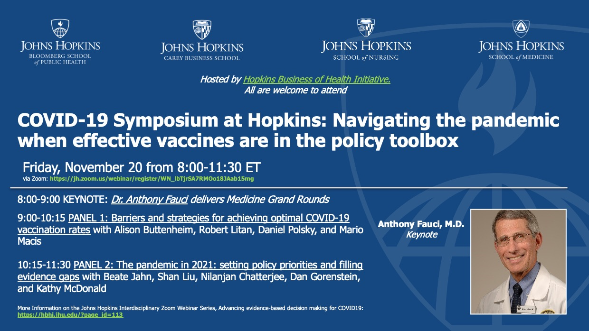

"Antonio Pigliaru" Workshop on Social Norms and Cultural Codes, Cagliari, June 22 2022
Ca' Foscari Venezia - Sapienza Roma - AISRI conference on Nati sotto il segno del PNRR - Nuove relazioni industriali e diritto del lavoro, June 8, 2021
JHU-LSE conference on Experimental Insights from Behavioral Economics on Covid-19, February 12 and 19, 2021


COVID-19 Symposium at Hopkins: Navigating the Pandemic when effective vaccine is in the toolbox, November 20, 2020

Le prospettive dell'economia in Sardegna dopo la pandemia, 19 giugno 2020
The logic of cooperation: social distancing, rules and reopening, Society for Civic Economics, May 25, 2020 (in Italian).
Inaugural Hopkins at Home Lecture, April 7 2020
Understanding social support for morally contested transactions -- the case of payments for body parts (U of Pennsylvania, November 14 2019)
Letter to The Economist (31 My 2018) in reaction to "Lift bans on paying for human-blood plasma".
Socio-Economic Costs of the Zika virus: a United Nations Development Programme report.
Expert panelist at Congressional staff briefing on Should Compensation for Bone Marrow Donors be Legal?, US Senate Russell Office Building
Panel on Blood and Organ Donation at AAEP meetings in Argentina (with Alvin Roth, Julio Elias and Victor Iajya)
TEDx talk: Economic Incentives for Body Parts
Rationality and Bias in the Informed Consent Process: Perspectives from Behavioral Economics and the Social Sciences, Berman Institute of Bioethics seminar.
Expert presentation at Congressional staff briefing on "Research proposals on the effects of compensation to bone marrow donors", US Congress, Rayburn House Office Building
When field studies diverge from lab experiments: the case of incentivized blood donations, guest post in the World Bank Development Impact Blog
CESIfo Workshop on Social Economics
Inside Higher Ed's "Academic Minute" on Economics and the Blood Supply